Sentaurus Structure Editor
2. Generating 2D Boundaries
2.1 Overview
2.2 Reinitializing Sentaurus Structure Editor
2.3 Exact Coordinates and Auto Region Naming Modes
2.4 Selecting Materials
2.5 Selecting the Default Boolean Expression
2.6 Creating Rectangular Regions
2.7 Rounding Edges
2.8 Defining Contacts
2.9 Setting Contacts at Existing Edges
2.10 Adding Vertices
2.11 Defining a Region as a Contact
2.12 Saving the Model
2.13 Assignment
Objectives
- To generate 2D boundaries.
2.1 Overview
This section is intended to familiarize you with some fundamental functions that Sentaurus Structure Editor supports. For this purpose, a 2D SOI MOSFET device, similar to the one shown in Figure 1, will be created using basic 2D geometric operations.
{kind=link}
Figure 1. Two-dimensional SOI MOSFET device. (Click image for full-size view.)
2.2 Reinitializing Sentaurus Structure Editor
To start a new object and discard all objects that have been previously defined:
- Choose File > New, or press Ctrl+N, or click the toolbar button.
The corresponding Scheme command is:
(sde:clear)
This command restarts the Sentaurus Structure Editor environment and resets most of the internal variables to their default values. However, some internal variables might remain defined at their previously set values.
2.3 Exact Coordinates and Auto Region Naming Modes
In Sentaurus Structure Editor, geometric objects can be drawn manually. However, for most applications, it is convenient (and sometimes necessary) to specify explicitly the coordinates of the object, for example, to allow for precise alignment of different regions.
To do this, you must activate the Exact Coordinates mode. This mode is deactivated by default when Sentaurus Structure Editor initially starts.
To activate the mode, choose Draw > Exact Coordinates.
A check mark now precedes the Exact Coordinates command indicating the mode is active. When the mode is active, all subsequent command operations that involve the placement of any object will display a dialog box in which exact coordinate values can be entered for the object being edited.
By default, Sentaurus Structure Editor assigns a default name to a drawn object. You can assign a different name, by changing the default behavior, by choosing Draw > Auto Region Naming.
2.4 Selecting Materials
All materials used by Sentaurus Structure Editor are accessible from the Material list.
To set the material to be used for new objects:
- From the Material list, select the required material, for example, Silicon.
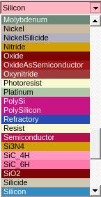
Figure 2. Material list showing available materials.
Until a new material type is selected, all newly added regions consist of the material type that is currently being selected.
2.5 Selecting the Default Boolean Expression
In some applications, a device has only one region. In most other cases, a device has multiple regions. When you use the user interface to build a device with multiple regions, the later-added regions might intersect existing regions. If this occurs, a predefined scheme is required to resolve the overlapping region.
Sentaurus Structure Editor includes several predefined schemes. For example, to select the New Replaces Old scheme in which newly added regions replace old regions where they overlap:
- Choose Draw > Overlap Behavior > New Replaces Old, or click the toolbar button.
The corresponding Scheme command is:
(sdegeo:set-default-boolean "ABA")
2.6 Creating Rectangular Regions
To create a rectangular, silicon substrate region:
- Choose Draw > 2D Create Tools > Rectangular Region, or click the toolbar button.
- Drag the pointer to draw a rectangle in the view window.
- In the Exact Coordinates dialog box, enter (-0.5 0.2), (0.5 1.0) in
the corresponding fields and click OK.
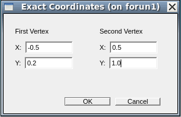
- If Auto Region Naming is not activated, then a dialog box opens, where
you can enter the name of a region. Enter R.Substrate.
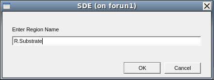
- If the rectangle does not fit the view window, then choose View > Zoom to Extents to rescale the view.
The corresponding Scheme command for the drawing operation is:
(sdegeo:create-rectangle (position -0.5 0.2 0.0) (position 0.5 1.0 0.0) "Silicon" "R.Substrate" )
Other device regions can be created in a similar way as the substrate region. However, different regions often consist of different material types. Therefore, before drawing a region, select the required material type from the Material list (see Section 2.4 Selecting Materials).
Follow these rules to create the gate oxide region, the nitride spacer region, the polysilicon gate region, and the buried oxide region. Use the coordinates as follows:
| Region | Material | Coordinates |
|---|---|---|
| Gate oxide | SiO2 | (-0.2 -40e-4), (0.2 0.0) |
| Nitride spacer | Si3N4 | (-0.2 -0.2), (0.2 -40e-4) |
| Polysilicon gate | PolySi | (-0.1 -0.2), (0.1 -40e-4) |
| Buried oxide | SiO2 | (-0.5 0.1), (0.5 0.2) |
After these steps, the device structure is shown as in Figure 3.
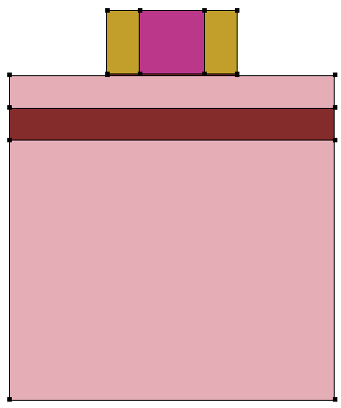
Figure 3. Device structure.
The corresponding Scheme commands are:
(sdegeo:create-rectangle (position -0.5 0.2 0.0) (position 0.5 1.0 0.0) "Silicon" "R.Substrate" ) (sdegeo:create-rectangle (position -0.5 0.1 0.0) (position 0.5 0.2 0.0) "Oxide" "R.Box" ) (sdegeo:create-rectangle (position -0.5 0.0 0.0) (position 0.5 0.1 0.0)
In this example, the later-defined polysilicon gate region overlaps the previously defined spacer region. Since the New Replaces Old option has been set to be the default Boolean, the overlap is resolved in such a way that the gate region replaces the spacer region where the two regions overlap. Likewise, the later-defined buried oxide takes up the overlapped substrate region. Although this given structure also can be defined precisely without any overlap, the process would take more steps as more regions would have to be defined.
2.7 Rounding Edges
Sentaurus Structure Editor includes functions that round the corners and the edges of a structure.
To round the two outside corners of the nitride spacers:
- Choose Edit > Parameters.
The Parameters dialog box opens.
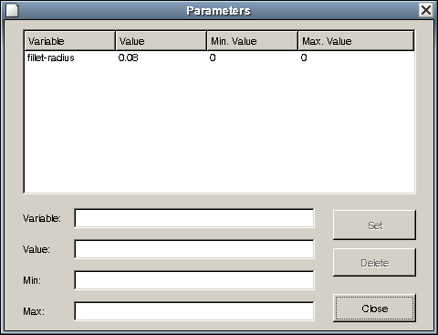
- In the Variable field, enter fillet-radius, and in the Value field, enter 0.08.
- Click Set.
- Click Close.
- From the Selection Level list, choose Select Vertex.
- Click the Select () toolbar button.
- Click the upper-left corner of the spacer to highlight the vertex.
- Choose Edit > 2D Edit Tools > Fillet.
The selected corner is now rounded. - Repeat the last two steps for the upper-right corner of the spacer.
Figure 4 shows the result.
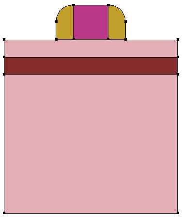
Figure 4. Rounded corners of the spacers using the fillet-radius parameter.
The corresponding Scheme commands for the rounding operations are:
(sde:define-parameter "fillet-radius" 0.08 0.0 0.0 ) (sdegeo:fillet-2d (find-vertex-id (position -0.2 -0.2 0.0)) fillet-radius) (sdegeo:fillet-2d (find-vertex-id (position 0.2 -0.2 0.0)) fillet-radius)
In the command-line window, the displayed rounding command is (sdegeo:fillet-2d (list(car(find-vertex-id (position -0.2 -0.2 0.0)))) 0.08). In the above commands, a simplified expression applicable for a single vertex is used. The vertex to be rounded is selected using the command (find-vertex-id (position x y z)) instead of using mouse operations.
2.8 Defining Contacts
Contacts can be defined to allow the constructed device to be connected to outside power sources.
To define a contact:
- Choose Contacts > Contact Sets.
The Contact Sets dialog box opens (see Figure 5). - In the Contact Name field, enter the name of the contact.
- In the Edge Color fields, specify RGB colors.
- In the Edge Thickness field, modify the value to mark the contact.
The Face Pattern field is effective only for marking 3D contacts. - Click Set.
The contact is added to the Defined Contact Sets pane. - Define additional contacts as required.
- When all the contacts have been defined, click Close.
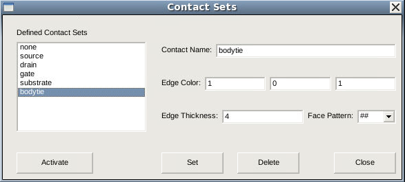
Figure 5. Contact Sets dialog box.
2.9 Setting Contacts at Existing Edges
Contacts become effective only after they are associated with part of the device structure. To associate a contact with a particular edge of a device:
- Choose Contacts > Contact Sets.
The Contact Sets dialog box opens (see Figure 5). - Select the required contact from the Defined Contact Sets pane, for example, source.
- Click Activate to activate the selected contact.
- Alternatively, a contact can be activated from the Contact list.
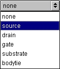 - In the Selection Level list, choose Select Edge to ensure that only edges of the device can be selected in the next steps.
- Click the Select () toolbar button.
- Click the edge of the structure where the contact, for example, source,
will be defined. The selected edge is now highlighted.
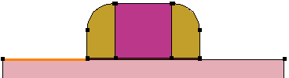Figure 6. Selecting edges of the source with left edge highlighted in orange.
- Choose Contacts > Set Edges.
This defines the selected contact, for example, source, at the highlighted edge. The edge is now characterized by the color and line styles previously set for the contact. - Repeat the above operations to associate the drain contact with the silicon epilayer edge to the right of the gate stack and the substrate contact with the bottom substrate edge.
The corresponding Scheme commands are:
(sdegeo:set-contact (find-edge-id (position -0.4 0.0 0.0)) "source") (sdegeo:set-contact (find-edge-id (position 0.4 0.0 0.0)) "drain")
The script version allows edges to be selected using explicit coordinates with the (find-edge-id (position x y z)) command instead of using mouse operations.
2.10 Adding Vertices
For the simulation of 2D SOI MOSFETs, artificial body-tied contacts are sometimes useful. These contacts are placed typically at the interface between the silicon epilayer and the buried oxide near the source side of the gate corner. Before such a contact can be defined, two additional vertices must be introduced.
To add vertices:
- Choose Edit > 2D Edit Tools > Add Vertex, or click the 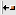 toolbar button.
- Click a location in the view window where the vertex is to be inserted.
The Exact Coordinates dialog box opens. - Enter the coordinates (-0.1 0.1) to define the location of the vertex, and click OK.
- Repeat the steps to add another vertex at (-0.05 0.1).
- In the 2D default rendering mode (Gouraud shaded), the newly added vertices are difficult to see. To change the rendering mode, choose View > Render > Wireframe, or click the toolbar button.
- Associate the bodytie contact with the edge defined by the two newly added vertices. Follow the procedure described in Section 2.9 Setting Contacts at Existing Edges.
Figure 7 shows the device viewed in the Wireframe mode with all the contacts that have been defined.
{kind=link}
Figure 7. Two-dimensional SOI MOSFET viewed in Wireframe mode with several contacts defined. (Click image for full-size view.)
The corresponding Scheme commands are:
(sdegeo:insert-vertex (position -0.1 0.1 0.0)) (sdegeo:insert-vertex (position -0.05 0.1 0.0)) (sdegeo:set-contact (find-edge-id (position -0.07 0.1 0.0)) "bodytie")
2.11 Defining a Region as a Contact
In some applications, a contact can cover the entire body of a (2D) region of the device. For example, the metal and polysilicon regions of a MOS device are often treated, as a whole, as ideal contacts.
To define such a contact:
- Select the contact, for example, gate, from the Contact list.
- From the Selection Level list, choose Select Body.
- Click the Select toolbar button.
- Click the region where the contact is to be defined, for example, the poly gate
region. The selected region is highlighted.
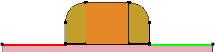Figure 8. Selecting the polygate region, highlighted in orange.
- Choose Contacts > Set Region Boundary Edges.
This converts the selected region into a contact. The edges of the region change to the color and style of the selected contact. - To remove the gate region, select the region and then choose Edit > 2D Edit Tools > Delete Region.
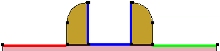
Figure 9. Removing the polygate region.
The corresponding Scheme commands are:
(sdegeo:set-contact (find-body-id (position 0.0 -0.1 0.0)) "gate" "remove")
2.12 Saving the Model
To save a model, choose File > Save Model, or press Ctrl+S, or click the corresponding toolbar button.
If the model has not been saved up to this point, the command displays a standard dialog box in which you can enter the file name for the output. Only the root name is required. Sentaurus Structure Editor appends implicitly all the extensions corresponding to different file formats.
The corresponding Scheme command is:
(sde:save-model "n@node@_geo")
This command saves the model geometry in the native ACIS format file n@node@_geo.sat, according to the specified file name n@node@_geo, where @node@ is replaced by the corresponding node number of Sentaurus Workbench. The Ref/Eval windows and parameters are saved in the Scheme script file n@node@_geo.scm, the mesh-related refinement and doping-related information is saved in the file n@node@_geo_msh.cmd, and the TDR boundary representation is saved in the file n@node@_geo_bnd.tdr.
In this example, no Ref/Eval windows have been created, so only the setting of the variable fillet-radius appears in the file n@node@_geo.scm.
Click to view all the commands discussed in this section in the command file geometry_dvs.cmd.
The complete project can be investigated from within Sentaurus Workbench in the directory Applications_Library/GettingStarted/sde/soifet.
2.13 Assignment
In this assignment, you are encouraged to build a bipolar transistor structure as shown in Figure 10.
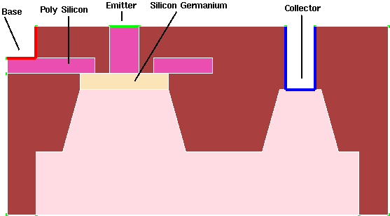
Figure 10. Two-dimensional bipolar transistor structure: SiGe HBT.
The tools discussed so far should allow you to work out most of the structure. However, to complete the assignment, you might need to be familiar with some additional tools that are explained here.
2.13.1 Moving Vertices
To move a vertex:
- Choose Draw > Move Vertex or click the toolbar button.
- In the view window, drag the vertex to its new location.
If the Exact Coordinates mode is active, use the Exact Coordinates dialog box to enter precisely the final location of the vertex.
The corresponding Scheme command is:
(sdegeo:move-vertex (car (find-vertex-id (position Xold Yold Zold))) (position Xnew Ynew Znew))
2.13.2 Creating Polygonal Regions
To create a polygonal region:
- Choose Draw > Create 2D Regions > Polygon, or click the toolbar button.
- Click a location in the view window where the first vertex of the polygon is
to be placed.
If the Exact Coordinates mode is active, use the Exact Coordinates dialog box to enter the exact coordinates for the vertex. - Repeat the previous steps for all of the other vertices except the last vertex of the polygon.
- For the final vertex, click the middle mouse button to place it.
The corresponding Scheme commands are:
(sdegeo:create-polygon
(list (position 0.6 -0.45 0.0)
(position 0.6 1.2 0.0)
...)
"Silicon" "Substate")
Click to view the command file sigehbt_dvs.cmd.
The complete project can be investigated from within Sentaurus Workbench in the directory Applications_Library/GettingStarted/sde/sigehbt.
Copyright © 2022 Synopsys, Inc. All rights reserved.